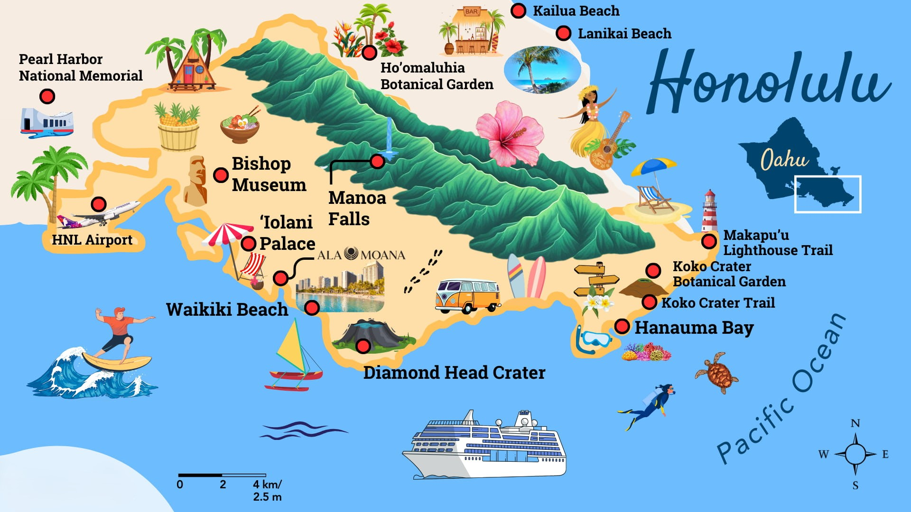
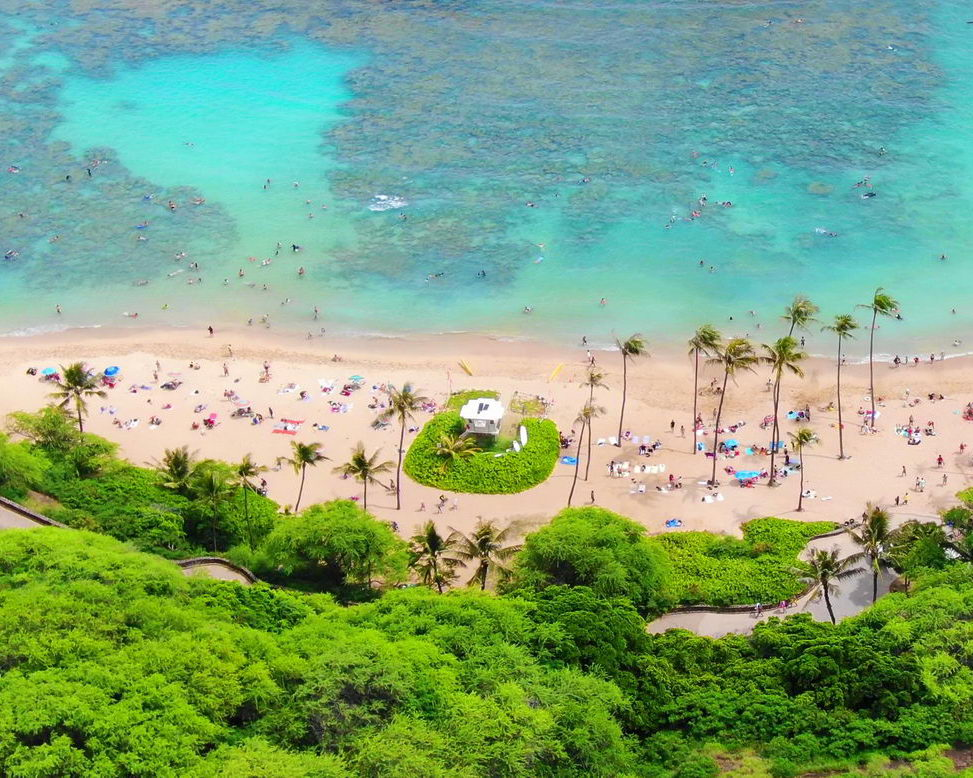
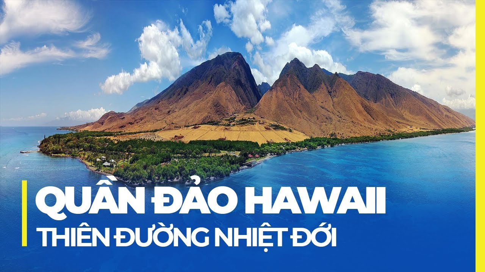
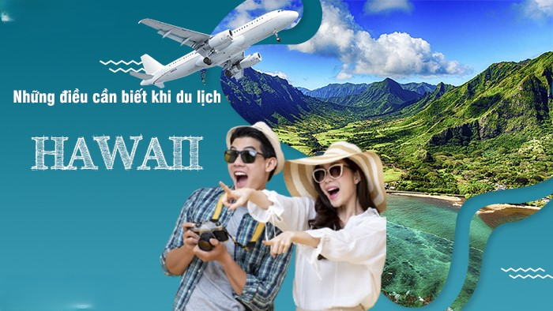
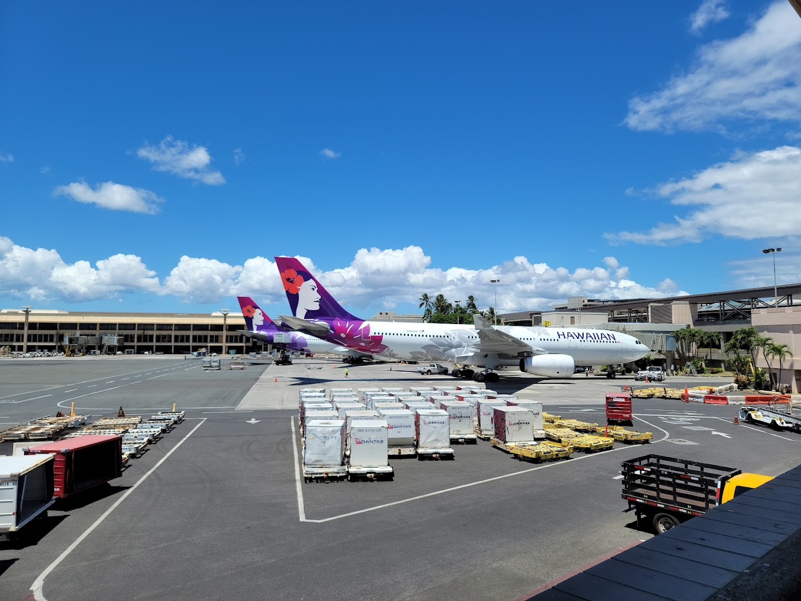
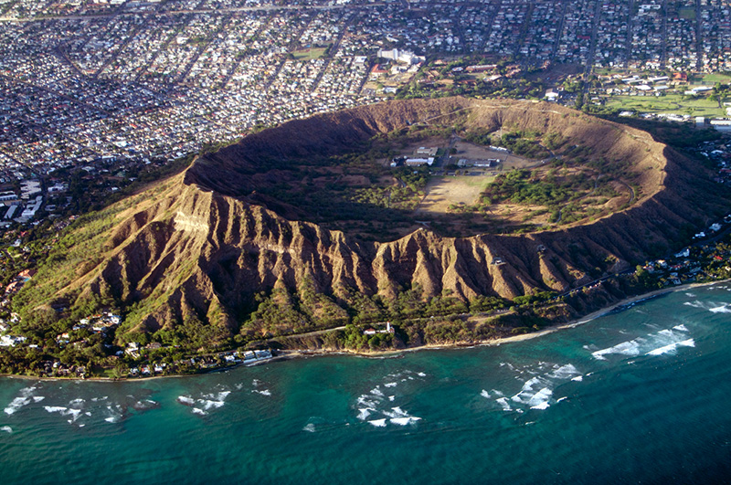
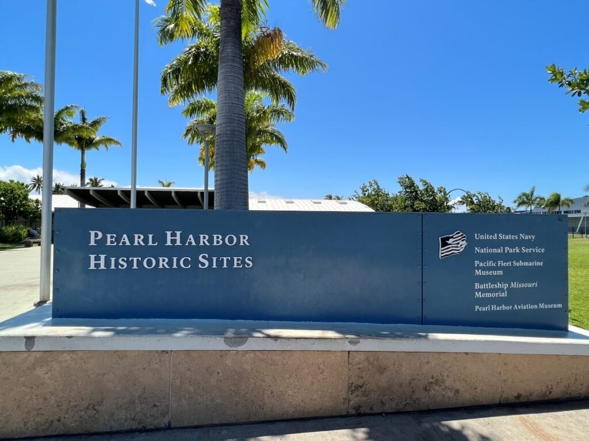
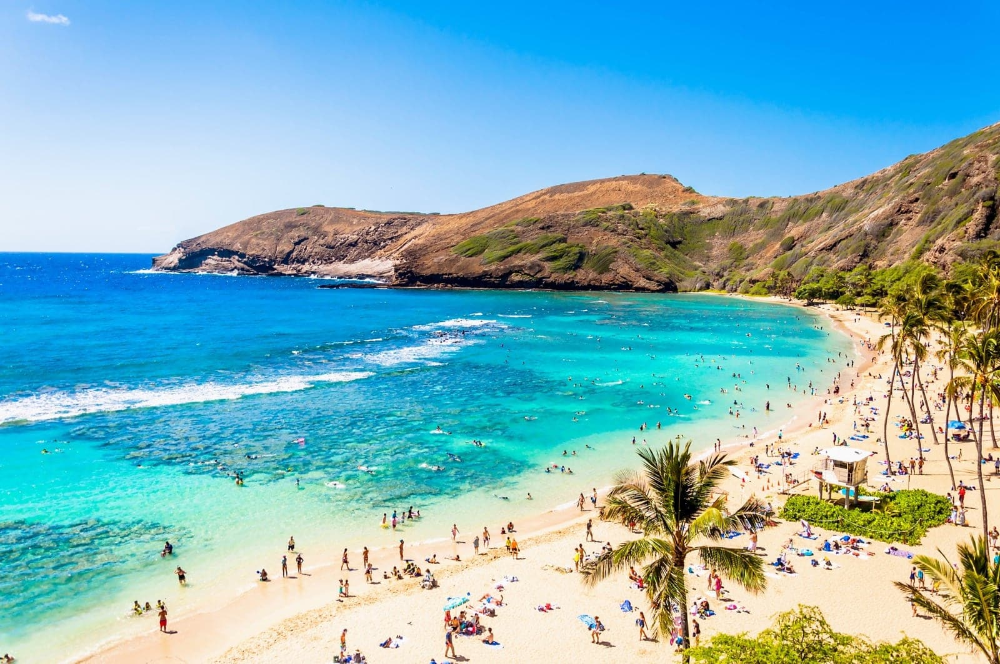
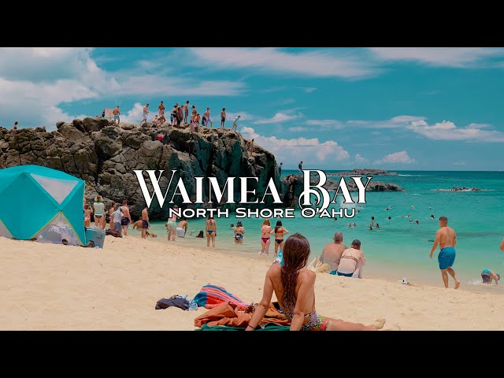
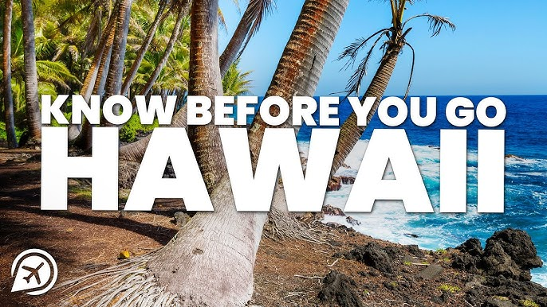

Tổng quan:
Đảo Hawaii nằm ở trung tâm nhiệt đới của Thái Bình Dương, là một quần đảo sở hữu 132 hòn đảo lớn nhỏ khác nhau. Thời tiết ở Hawaii vô cùng lý tưởng, quanh năm mát mẻ, ôn hòa. Thời điểm tốt nhất để đến Hawaii phụ thuộc vào những gì bạn mong muốn trong một kỳ nghỉ, nhưng nhìn chung, tháng 4-5 và tháng 9-10 mang lại thời tiết dễ chịu và ít đông đúc hơn.
- 🔎 Chuyến bay Từ: Sân bay Quốc tế Dulles (IAD) đến: Daniel K. Inouye Int’l Airport (HNL)
- Hãng bay có thể chọn: American Airlines, JetBlue, Southwest, Delta..
- 🕒 Mẹo: Đặt trước ít nhất 4–8 tuần để có giá tốt.
- Tìm các gói bao gồm cả chuyến bay + khách sạn để tiết kiệm (Expedia, Costco Travel, v.v.)

Điểm đến nổi bật ở Hawaii .
- Hanauma Bay — snorkeling (giới hạn khách, mở cửa theo lịch).
- Waikiki & Diamond Head (Honolulu) — bãi biển nổi tiếng + leo Diamond Head nhìn toàn cảnh.
- Pearl Harbor / USS Arizona Memorial — lịch sử, nên đặt vé sớm.
- North Shore (Waimea Bay, Banzai Pipeline, Haleiwa) — lướt sóng, shrimp trucks.
- Haleakalā (Maui) — sunrise nổi tiếng, cần reservation cho sunrise.
- Luau, hula show, farmers’ markets, local food (poke, shaved ice, loco moco).

🏨 Khách sạn/Khu nghỉ dưỡng ở Hawaii có nhiều nhà hàng (gợi ý theo đảo)
Halekulani (Waikiki) — La Mer, House Without a Key, Orchids… (ăn uống cao cấp + bình dân).
- Vị trí: Đảo Oʻahu (Waikiki / Ko Olina)

Aulani, A Disney Resort & Spa (Ko Olina) — nhiều lựa chọn phù hợp gia đình (buffet, beachside, lounge).
- Vị trí: Đảo Oʻahu (Waikiki / Ko Olina)

Grand Wailea (Waldorf Astoria) — nhiều nhà hàng, vừa cao cấp vừa casual
- Vị trí: Đảo Maui (Wailea)

Four Seasons Hualālai — nhiều nhà hàng cao cấp và casual, ẩm thực biển/steak
- Vị trí: Đảo Big Island (Kona / Kohala Coast)

📌 Lưu ý chung khi chọn resort all-inclusive
- Hawaii không có nhiều resort all-inclusive truyền thống như Caribbean hay Mexico. Tuy nhiên, một số resort hoặc khách sạn cao cấp có gói "tương tự all-inclusive" — bao gồm ăn uống, hoạt động, và tiện ích trong giá hoặc phụ phí.
- Travaasa Hana (Maui): Gói bao gồm: chỗ ở, tất cả bữa ăn, Wi-Fi, credit resort $175/người (có thể dùng ở spa), tip và hoạt động. Gần như “all-inclusive” thực thụ.
- Wailea Beach Resort – Marriott (Maui): Có 10 nhà hàng, nhiều hồ bơi (pool slide lớn nhất Hawaii), spa, wellness pool, luau và trải nghiệm văn hóa — một khu nghỉ dưỡng rất đầy đủ tiện nghi
- Royal Lahaina Resort (Maui): Gói “Royal Experience” bao gồm phòng oceanfront giá ưu đãi, buffet sáng, 1 buổi luau, và cruise ngắm hoàng hôn. Yêu cầu lưu trú tối thiểu 5 đêm. Gói semi-inclusive rất hấp dẫn.
- Royal Kona Resort (Big Island) – “Royal Experience”: Gói tương tự: bao gồm phòng, ăn sáng, luau và cruise hoàng hôn — dành cho kỳ nghỉ từ 5 đêm trở lên
- Aulani, A Disney Resort & Spa (Oʻahu): Không có gói all-inclusive đầy đủ, nhưng nhiều tiện ích đã được bao gồm: công viên nước, họp mặt nhân vật Disney, sự kiện, câu lạc bộ trẻ em… tạo cảm giác full-service cho gia đình.

Dưới đây là hướng dẫn từng bước hoàn chỉnh cho chuyến đi 5 ngày du lịch của bạn từ Fairfax, VA đến Oʻahu (Honolulu / Waikiki) Hawaii

🎒Chuẩn bị
- Giấy tờ cần thiết: Nếu bạn là công dân Mỹ không cần passport khi bay nội địa giữa các đảo.
- Vé máy bay khứ hồi. Giấy xác nhận đặt khách sạn
- Đặt vé trước: Haleakalā (sunrise at summit) yêu cầu reservation cho xe/khách để xem bình minh; phải đặt qua Website Nếu không có vé, có thể vào sau 7:00 AM nhưng sunrise cần vé.
- USS Arizona / Pearl Harbor đặt vé qua Website
- Book khách sạn & nhà hàng. Chọn khách sạn có nhiều nhà hàng nội khu nếu bạn thích ăn uống đa dạng (gợi ý: Halekulani, Aulani, Grand Wailea, Four Seasons Hualālai
- Phương tiện di chuyển: Nếu muốn tự lái: đặt xe thuê sớm (đặc biệt mùa cao điểm). Lưu ý phí “young driver”, quy định seatbelt, giới hạn tốc độ, bảo hiểm bắt buộc. Nếu chỉ ở Waikiki: có thể không cần thuê xe, đi bộ + taxi/ride-share + tour.
- Kem chống nắng SPF50+, mũ, kính râm, đồ bơi, dép/chạy bộ, áo nhẹ cho chiều tối, bộ sơ cứu cá nhân, thuốc say tàu/thuyền. Ổ cắm/adapter, pin dự phòng, túi chống nước cho điện thoại.

📅 Ngày 1: Đến Hawaii
- ✈️Hạ cánh sân bay Daniel K. Inouye Int’l Airport (HNL)
- Di chuyển vào Waikiki (~20–30 phút tuỳ giao thông). Check-in, dạo biển Waikiki lúc hoàng hôn, ăn tối nhẹ

📅 Ngày 2: Waikiki + Diamond Head
- Sáng: Ăn sáng, leo Diamond Head (2-3h cả đi về).
- Trưa: Ăn ở Waikiki (nhà hàng resort hoặc casual).
- Chiều: Thư giãn bãi biển, paddleboard hoặc lesson lướt sóng.
- Tối: Luau / hula show (nên đặt trước).

📅 Ngày 3:Pearl Harbor & Downtown
- Sáng sớm: USS Arizona Memorial / Pearl Harbor — đặt vé Recreation.gov (vé phát hành theo lịch, book sớm).
- Trưa: Downtown/Chinatown (ăn trưa, tham quan).
- Chiều: Iolani Palace hoặc Ala Moana Center shopping.
- Tối: Dinner fine dining (gợi ý La Mer tại Halekulani nếu muốn đặc biệt).

📅Ngày 4: Hanauma Bay + Makapuʻu / Byodo-in (option)
- Sáng: Hanauma Bay snorkeling (mở cửa theo lịch, giới hạn khách) — hãy đến sớm.
- Trưa: Dùng bữa ven biển.
- Chiều: Drive đến Makapuʻu Lookout hoặc Koko Head (view).
- Tối: Nghỉ ngơi, thưởng thức ẩm thực địa phương.

📅Ngày 5: North Shore & Haleiwa
- Cả ngày: lái/thuê tour đi North Shore: Waimea Bay, Banzai Pipeline, lunch tại Haleiwa (shrimp trucks, shave ice). Nếu thích, ghé surf school, xem sunset ở Sunset Beach.

📌 Lưu ý riêng khi ở Hawaii
- An toàn biển: một số bãi có dòng chảy mạnh — luôn quan sát cờ cảnh báo, hỏi cứu hộ. (goHawaii travel tips).
- Tôn trọng văn hoá địa phương (aloha): đừng lấy san hô/ vỏ ốc, tôn trọng cảnh báo & biển cấm.
- Tipping: 15–20% ở nhà hàng là chuẩn; tips cho bellhop/housekeeping/tour guide theo tình hình.
- Luật giao thông: bắt buộc thắt dây an toàn, không dùng điện thoại khi lái, tốc độ giới hạn nghiêm. Xem quy định thuê xe & bảo hiểm.
- Sóng & thời tiết: Hawaii có microclimates — vùng núi lạnh hơn, bắc/nam đảo khác nhau; kiểm tra dự báo cẩn thận.